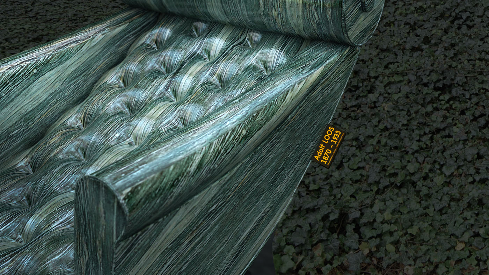
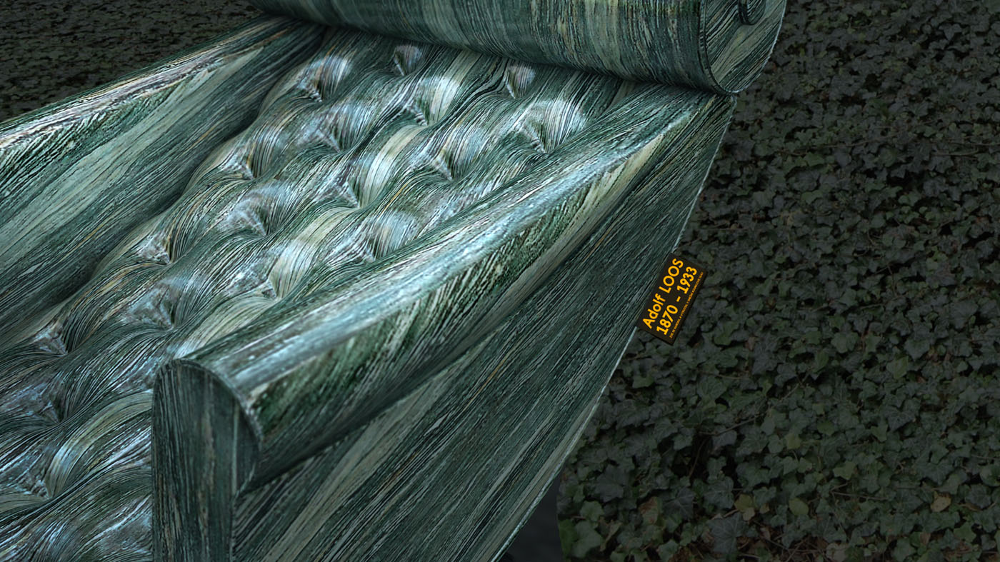

-
 
 -


Památník Adolfa Loose
Adolf Loos byl velice pozoruhodný architekt 20.století. Ve své době slavným, někdy i dokonce méně žádaným architektem a v každém případě i výstřední vyhraněnou osobností. Přesto se mu povedlo zrealizovat v Evropě několik staveb, ze kterých se architekti a umělci inspirují dodnes. Některé z nich se staly klíčovými stavbami dějin světové architektury.
Při tvorbě sochy věnované architektovi Adolfovi Loosovi jsme si kladli otázku. Jak jednoduše a výstižně upozornit na osobnost Adolfa Loose ve veřejném prostoru, aniž bychom přímo citovali jeho koncepci prostoru všeobecně známou jako Raumplan. Realizovat ve veřejném prostoru objekt, který se vztahuje k jeho tolik typické prostorové koncepci architektury by bylo příliš obtížné a navíc by to postrádalo smysl, protože socha není architektura. Hledali jsme tedy typický symbol, který charakterizuje tvorbu Adolfa Loose. Zároveň jsme nechtěli příliš zacházet do intelektuálních debat a přespřílis konceptualizovat tvorbu této výrazné osobnosti. Po dlouhé rozvaze jsme došli k názoru, že nejlepší volbou bude najít něco typického z jeho uskutečněných interierů. Snažili jsme se najít takový typický prvek, který Loos používal ve svých vilách, bytech, kavárnách a obchodních domech, ale který by vyjádřil i ducha jeho tvorby. Objekt, který bychom mohli považovat za symbol.
Loosovy interiery jsou rozmanité, bohaté působí romantizujícím dojmem a jsou plné užitého umění, které autor přímo nenavrhoval, ale velmi často je používal a dohromady kombinoval různé styly a tím spolu s pečlivě volenými materiály a kvalitním řemeslem vyvtářel nádherné interiery. Křeslo, které se v interierech nachází, často opakuje a nedá se přehlédnout, je proslulé nádherné křeslo zvané Knieschwimmer”. Bylo vyráběné a pravděpodobně i navrhnuté designérem a architektem F. O. Schmidtem, s jehož vídeňskou firmou Adolf Loos počátkem 20.století spolupracoval. Důležitým momentem je to, že A. Loos sice nenavrhl tento kus nábytku, ale používal jej jako doplněk vetšiny svých interierů. To se netýká pouze tohoto křesla jedná se o princip tvorby Adolfa Loose. Toto je důvod proč jsme se v našem návrhu rozhodli použít “knieswimmer” jako symbolický a podle našeho názoru i adekvátní motiv k životu a dílu brněnského rodáka Adolfa Loose.
Dalším specifikem jeho tvorby byl pečlivý výběr materiálů a jejich kombinace. Typickým materiálem je zelený italský mramor zvaný Cipollino. Křeslo bude provedeno právě z tohoto druhu mramoru a osazeno přímo do trávníku. Měřítkem 2,5 krát větším než-li ve skutečnosti docílíme, že objekt přestane být nábytkem a stane se součástí prostoru. Knieschwimmer umístíme v nadživotní velikosti na dané místo a prostor kolem pomníku bude postupně zarůstat břečťanem, též patřícím mezi Loosovy oblíbené a často používané rostliny. Popínavé rostiny pokrývající navenek fasády jeho staveb jsou dalším typickým symbolem jeho tvorby.Věříme, že se nám použitím křesla Knieschwimmer, materiálovým pojednáním a umístěním v břečťanovém podhoubí podaří skloubit podstatné principy tvorby Adolfa Loose a vytvořit soudobý a živý památník, který se stane součástí veřejného prostoru.
| Klient | Statutární město Brno |
| Lokace | Brno – Střed, Česká republika |
| Typologie | socha |
| Typ | stálá instalace |
| Rok | 2018 |
| Status | soutěž – otevřená |
| Autoři | MgA. Mark Ther, MgA. Filip Kosek, MgA. Jan Říčný |